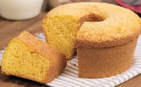

-Ingredientes necessários para a receita:
- Duas xícaras de fubá
- Uma xícara de farinha de trigo
- Uma xícara e meia de açucar
- Uma colher (sopa) de fermento em pó
- Três ovos
- Uma xícara de leite
- Uma xícara e meia de óleo
- Uma pitada de sal
-Modo de preparo:
- Pré-aqueça o forno a 180°C e unte a forma com manteiga e farinha
- Em uma tigela, misture o fubá, açucar, o fermento e o sal
- Adicione os ovos, o leite e o óleo, misturando bem até obter uma massa homogênea
- Despeje a massa na forma e leve ao forno por cerca de 35 a 40 minutos, ou até dourar
- Faça o teste do palito: se sair limpo o bolo está pront!
- Espere esfriar um pouco antes de desenformar
- Se quiser um toque especial, acrescente erva-doce ou queijo ralado na massa! 😋